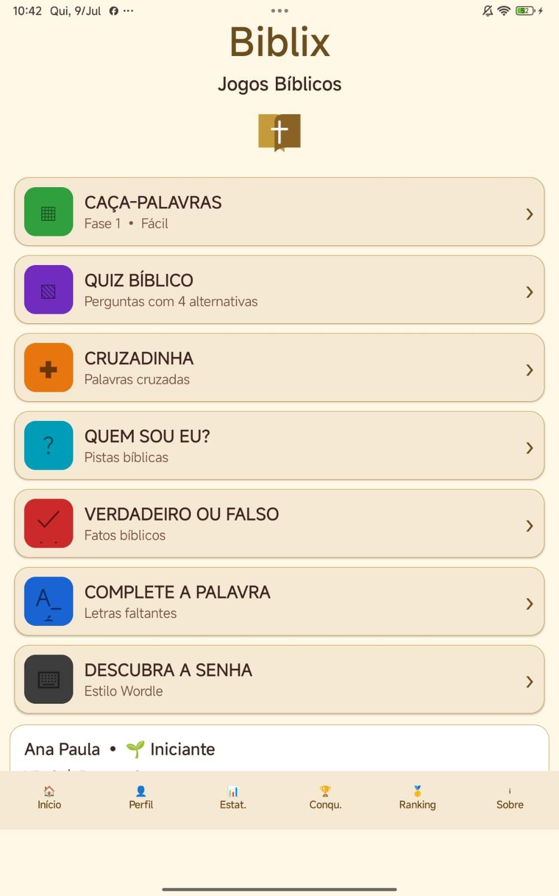
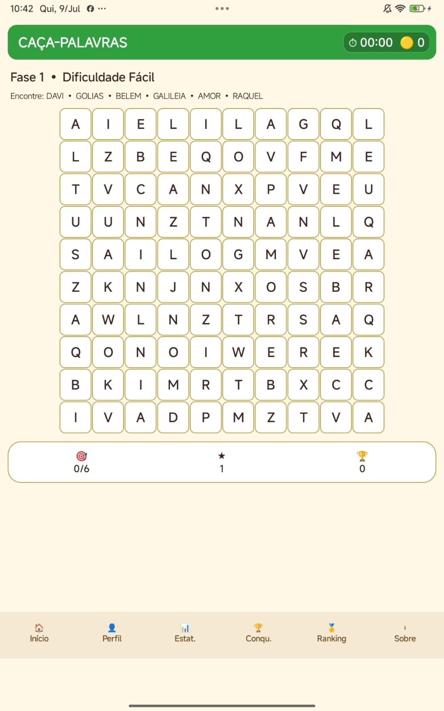
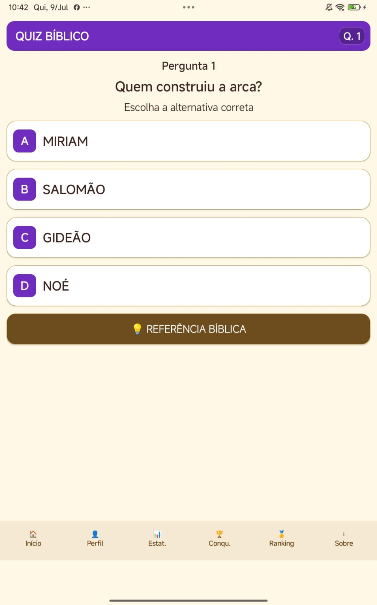
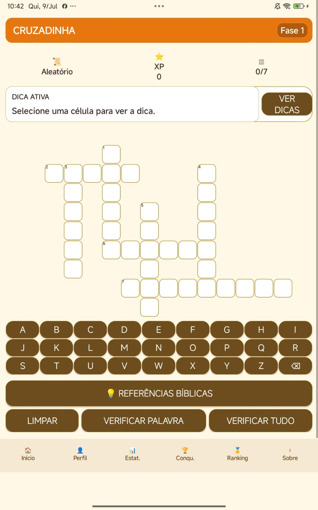
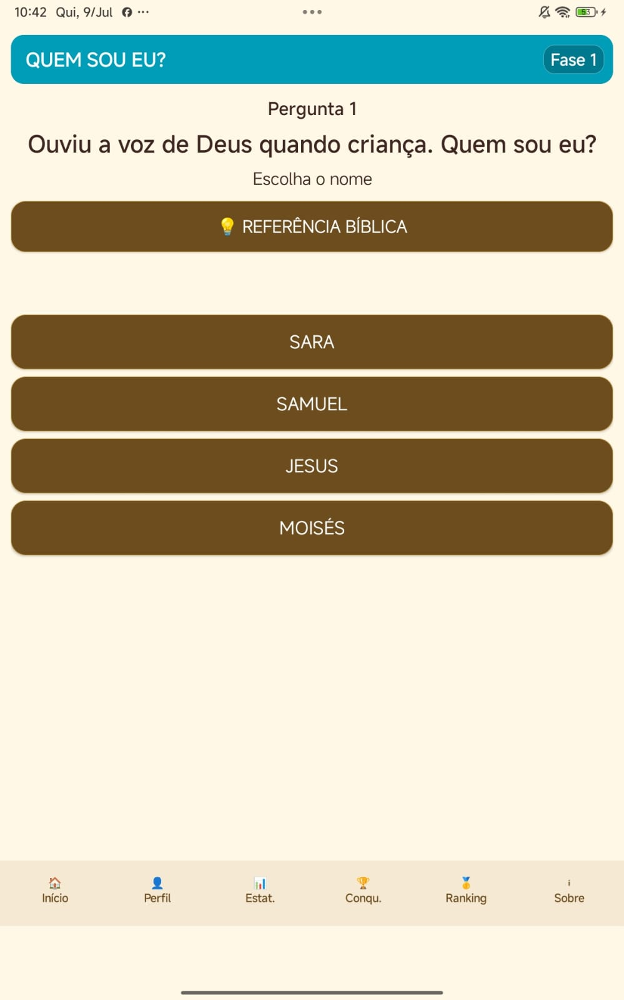
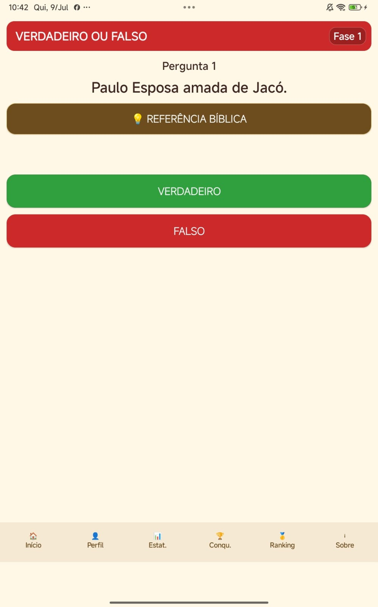
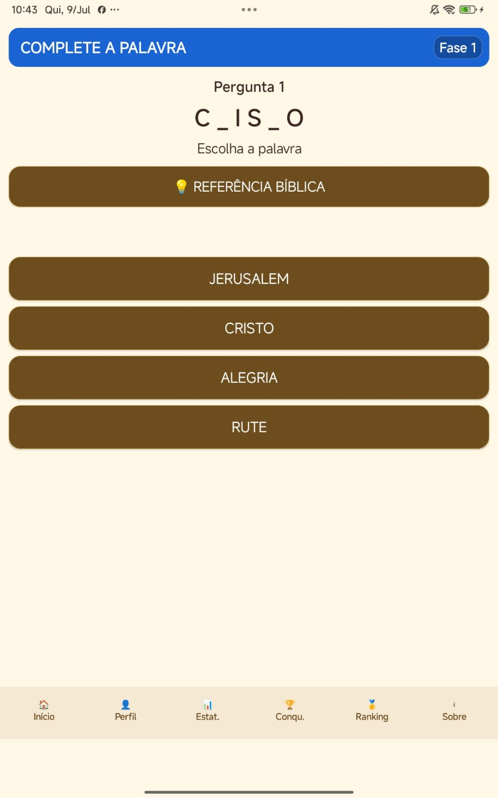
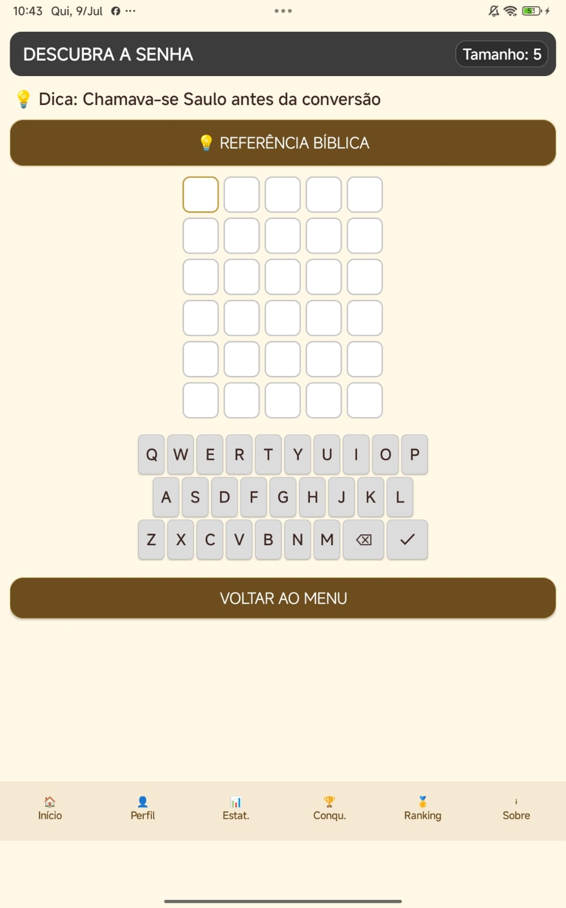

Luiz Gustavo Pinto
Biblix – Jogos Bíblicos
Aprenda a Palavra de Deus jogando e se divertindo.
Aplicativo Android
Biblix – Jogos Bíblicos
Uma experiência completa de jogos bíblicos com desafios variados, progressão, referências bíblicas, conquistas e ranking.
7 modos de jogo
Referências bíblicas
XP e conquistas
Ranking
Diversão com propósito
Jogos pensados para aprender, revisar e testar conhecimentos bíblicos.
Vários desafios
Quiz, palavras, pistas, cruzadinha, caça-palavras e muito mais.
Evolução contínua
Ganhe XP, acompanhe estatísticas, conquistas e posição no ranking.
Principais recursos
- ✓ Caça-Palavras
- ✓ Quiz Bíblico
- ✓ Cruzadinha
- ✓ Quem Sou Eu?
- ✓ Verdadeiro ou Falso
- ✓ Complete a Palavra
- ✓ Descubra a Senha
- ✓ Referências bíblicas
- ✓ Perfil e estatísticas
- ✓ Ranking, XP e conquistas
Conheça o aplicativo
Veja algumas telas e modos de jogo disponíveis no Biblix.








Privacidade e suporte
Consulte a Política de Privacidade e utilize a página de Suporte para dúvidas ou solicitações.
Quando o aplicativo estiver publicado, substitua este aviso pelo botão oficial da Google Play.